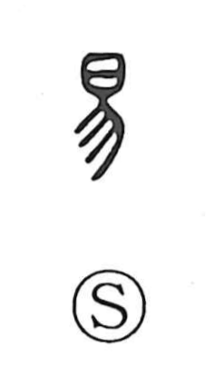

易

Kun: yasashii | On: eki, i
change ・ easy
Explanation
In early forms, 易 combines 日 and 勿: Shirakawa takes the “sun” element as a gleaming jade, while 勿 traces the rays of light it emits. A related graph, 昜, depicts jade set on a stand and is the prototype of 陽, “sunlight.” Since jade’s radiance was believed to possess spiritual power that could transform things, 易 came to mean “to change,” and by extension “easy.” In usage, the sense “change” takes the on reading eki, and the sense “easy” takes i.